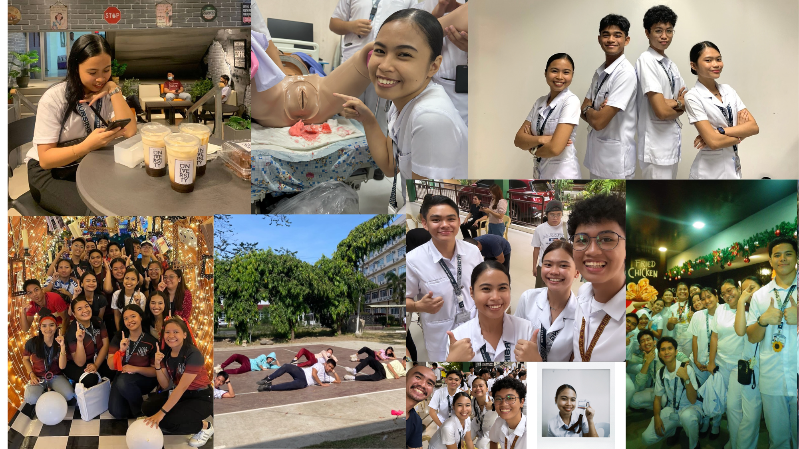
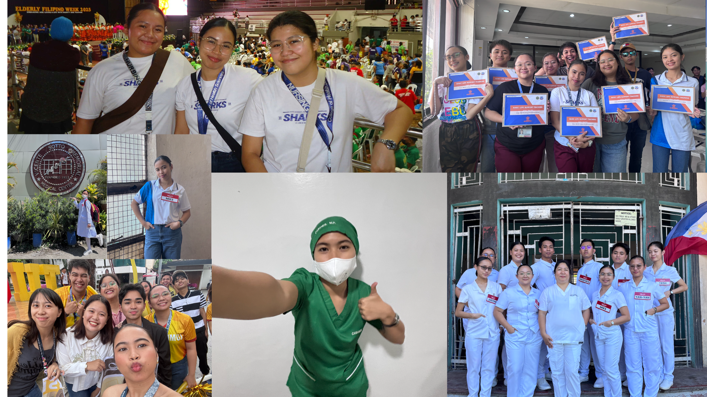
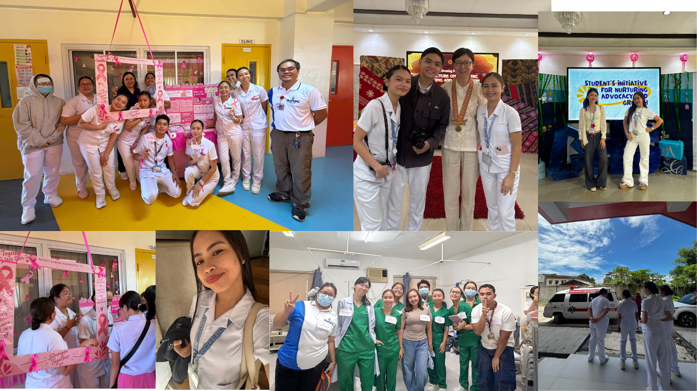

My first year was the beginning of my nursing journey. It was a time of adjusting to college life, learning the fundamentals of nursing, and discovering what it truly means to care for others.
My second year brought more challenges and opportunities to learn. I started developing my nursing skills and gained more confidence through laboratory activities and clinical experiences.

Third year became a period of growth and deeper learning. I experienced more clinical responsibilities and began connecting the knowledge I learned in class with actual patient care.

Now in my fourth year, I am continuing to grow as a student nurse while preparing for my future profession. Every experience has taught me to become more compassionate, responsible, and confident in caring for others.
Every year brought a new lesson, a new challenge, and another step closer to becoming a nurse.